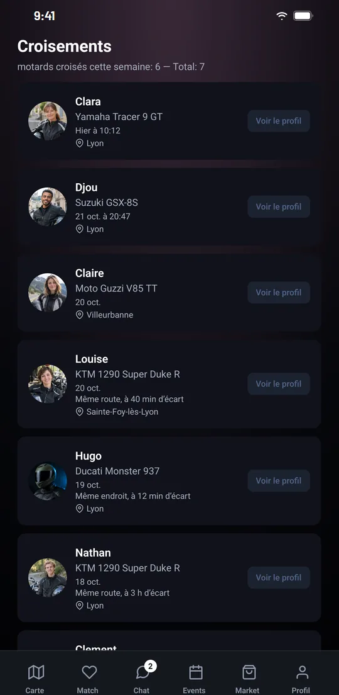
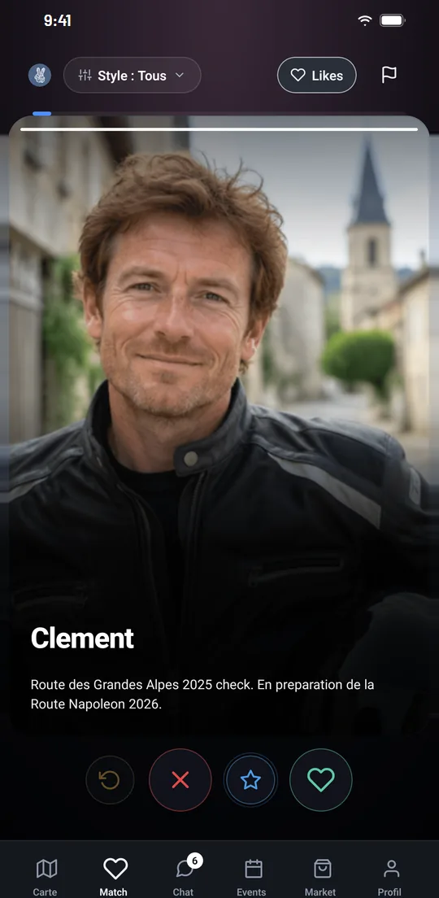
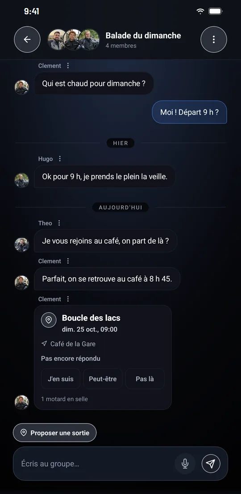

Communauté moto : retrouvez les riders que vous croisez sur la route
IzenRide enregistre les riders que vous croisez, vous met en relation selon votre moto et votre pratique, et réunit votre groupe dans une messagerie dédiée. Vous choisissez ce que les autres voient de vous.
- Croisements automatiques
- Match
- Messagerie et groupes
- Visibilité maîtrisée

Croisements : chaque salut sur la route, enregistré.
Lorsque vous partagez votre position, application ouverte, IzenRide enregistre automatiquement les riders que vous croisez, avec le lieu et l'heure de la rencontre.
Les rencontres répétées sont signalées, par exemple « 3 fois sur la même route ». Chaque croisement affiche le rider croisé et sa moto. Vous choisissez de recevoir les notifications en temps réel, chaque jour ou chaque semaine.
Dans l'offre gratuite, l'historique des croisements est flouté. L'historique complet est inclus dans Premium.
Des riders qui roulent comme vous.
Match vous met en relation avec des riders selon la moto, la distance, le style de conduite, le niveau et les centres d'intérêt. De quoi trouver avec qui partager une balade, un col ou une journée sur circuit.
- Offre gratuite30 likes et 1 super-like par jour.
- PremiumLikes illimités, 5 super-likes par jour, « Qui m'a liké » et filtres avancés.

Votre club moto, dans une seule discussion.
Messages texte, vocaux et photos. Un contact n'est possible qu'après un match, l'échange de votre code personnel (« Mon code ») ou un groupe ou une sortie en commun. L'option « Premier message » réserve le premier message à vos matchs.
Groupes
Un espace dédié à votre club ou à votre groupe de riders. Les invitations sont envoyées à vos contacts, qui rejoignent le groupe après acceptation. Un lien d'invitation peut aussi être partagé : permanent, limité à 10 utilisations ou valable 7 jours. La personne qui administre le groupe peut le désactiver à tout moment.
Dans la discussion, une sortie proposée s'affiche avec sa date et son lieu de rendez-vous : chaque membre répond « J'en suis », « Peut-être » ou « Pas là ».
Trouver une sortie moto en groupe
Vous choisissez ce que les autres voient.
Rien n'est partagé tant que vous ne lancez pas la diffusion depuis la carte. Vous réglez ensuite la précision de votre position, ou vous la masquez.
Voir les outils de sécurité et de confidentialité| Réglage | Ce que voient les autres membres |
|---|---|
| Précise | Votre position, à 50 m près. |
| Floue | Un point flouté dans un rayon de 500 m. |
| Très floue | Une position à 5 km près, à l'échelle de la ville. |
| Masquée | Vous n'apparaissez pas sur la carte. |
| Zones de confidentialité | Jusqu'à 5 zones, chacune avec son rayon, dans lesquelles vous n'apparaissez pas. |
L'essentiel de la communauté est gratuit.
Premium : 9,99 € par mois ou 79,99 € par an, sans engagement, à souscrire dans l'application via Google Play ou l'App Store.
| Fonction | Gratuit | Premium |
|---|---|---|
| Messagerie, groupes, rejoindre des sorties | Inclus | Inclus |
| Historique des croisements | Flouté | Complet |
| Riders sur la carte en temps réel | Non inclus | Inclus |
| Likes par jour | 30 | Illimités |
| Super-likes par jour | 1 | 5 |
| « Qui m'a liké » et filtres avancés | Non inclus | Inclus |
| Créer vos sorties | Non inclus | Inclus |
Communauté moto : vos questions
Une autre question ? Écrivez-nous à support@izenride.com.
Comment rencontrer des riders près de chez moi ?
Activez le partage de votre position depuis la carte : IzenRide enregistre les riders que vous croisez. Vous pouvez aussi utiliser Match, rejoindre un groupe ou participer à une sortie de l'agenda.
Qui peut m'envoyer un message ?
Uniquement les personnes avec lesquelles vous êtes en relation : après un match, l'échange de votre code personnel, ou un groupe ou une sortie en commun. L'option « Premier message » réserve le premier message à vos matchs.
Comment un croisement est-il enregistré ?
Un croisement est enregistré lorsque deux membres qui partagent leur position, application ouverte, passent à moins de 500 m de distance, à 5 minutes d'intervalle. L'application repère aussi les riders ayant emprunté le même itinéraire le même jour ou fréquenté le même lieu.
Les croisements sont-ils gratuits ?
L'enregistrement des croisements fonctionne pour l'ensemble des membres. Dans l'offre gratuite, l'historique est flouté ; l'historique complet est inclus dans Premium.
Puis-je utiliser la communauté sans montrer ma position ?
Oui. Votre position n'est partagée qu'après activation depuis la carte, avec la précision de votre choix, et vous pouvez la masquer. Les croisements ne sont toutefois enregistrés que lorsque vous partagez votre position.
Tout IzenRide, en détail.
Téléchargez
IzenRide.
Disponible gratuitement sur Android et iPhone, en 9 langues. Créez votre compte en quelques minutes et paramétrez votre visibilité dès la première utilisation.